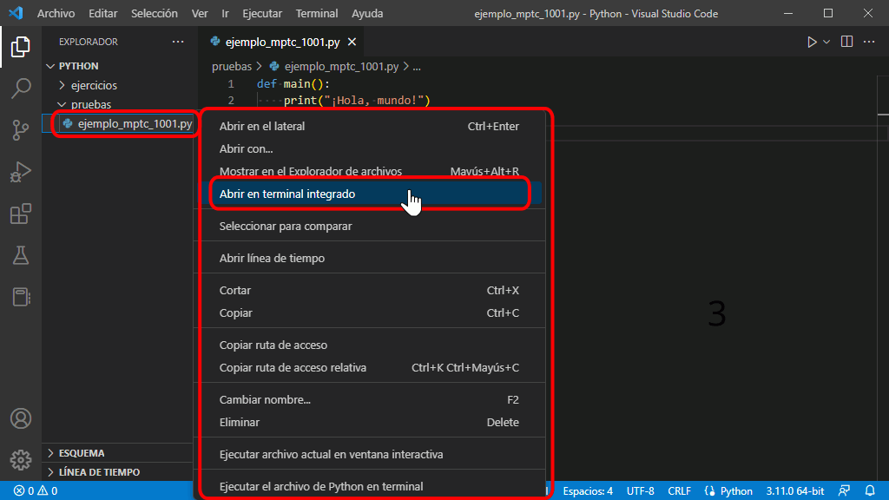

Cómo utilizar MPTC en Visual Studio Code
Los pasos para utilizar Mclibre Python Testing Client en Visual Studio Code son los siguientes:
- Elegir un ejercicio que incluya el identificador MPTC del ejercicio:
Los ejercicios para los que hay disponibles tests automáticos de MPTC se pueden identificar por el cuadro situado en la parte superior derecha del enunciado, como en el ejemplo siguiente:
Ejemplo de ejercicio - 1
Escriba un programa que salude al mundo.
¡Hola, mundo!El número del cuadro indica el identificador del ejercicio en MPTC. En el ejemplo anterior, el número sería 1001.
- Escribir el programa:
Escriba el programa que resuelve el ejercicio, siguiendo la plantilla de la lección Programa básico.
El programa correspondiente al ejemplo anterior podría ser el siguiente:
def main(): print("¡Hola, mundo!") if __name__ == "__main__": main() - Abrir una ventana de terminal en el directorio que contiene el programa:
Para ello, haga clic derecho sobre el directorio o el programa y elija la opción "Abrir en termninal":

Se abrirá una ventana de terminal en el directorio:

- Comprobar el funcionamiento del programa manualmente:
Compruebe que el programa funciona correctamente ejecutando el programa (escriba la orden python nombre_del_programa.py o py nombre_del_programa.py, donde nombre_del_programa.py es el nombre del programa) y comparando el resultado con el enunciado.

- Comprobar el funcionamiento del programa con MPTC
En el terminal, escriba la orden mptc nombre_del_programa.py identificador_mptc, donde nombre_del_programa.py es el nombre del programa e identificador_mptc es el identificador MPTC del ejercicio:

En el terminal, MPTC muestra tres grupos de mensajes:
- En el primer grupo (BIENVENIDO), MPTC informa del número de tests que se van a realizar.

- En el segundo grupo (EJECUCIÓN DE LOS TESTS), MPTC informa del resultado de cada test a medida que se van ejecutando.

- En el tercer grupo (RESULTADOS), MPTC muestra un resumen del resultado final.

- En el primer grupo (BIENVENIDO), MPTC informa del número de tests que se van a realizar.
- Corregir en su caso los errores detectados
En caso de que falle alguno de los tests, MPTC muestra en el terminal información sobre el error producido, que puede utilizarse para corregir el error.
En el terminal, MPTC muestra tres grupos de mensajes:
- En el primer grupo (BIENVENIDO), MPTC informa del número de tests que se van a realizar.
- En el segundo grupo (EJECUCIÓN DE LOS TESTS), MPTC informa del resultado de cada test a medida que se van ejecutando.
- En el tercer grupo (RESULTADOS), MPTC muestra un resumen del resultado final y una explicación más detallada del error producido (en este caso, nos indica que el mensaje mostrado por el programa no es exactamente igual al solicitado en el enunciado ya que faltan los signos de exclamación:
- En el primer grupo (BIENVENIDO), MPTC informa del número de tests que se van a realizar.